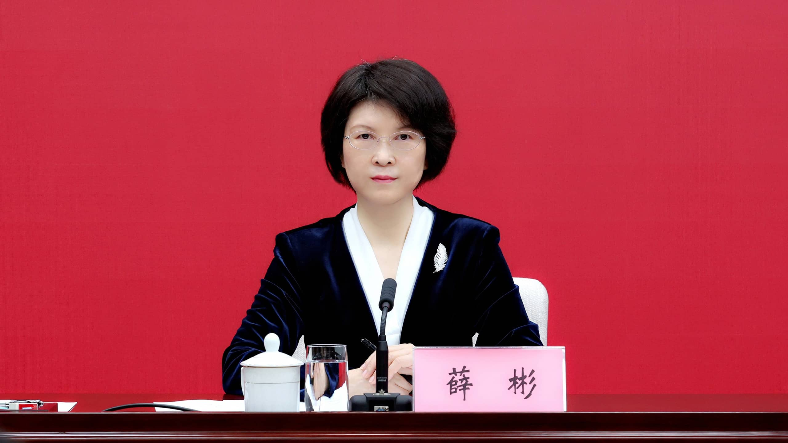
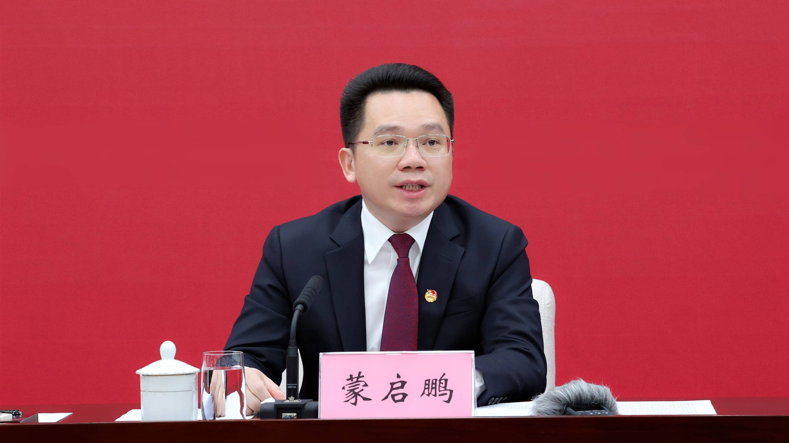
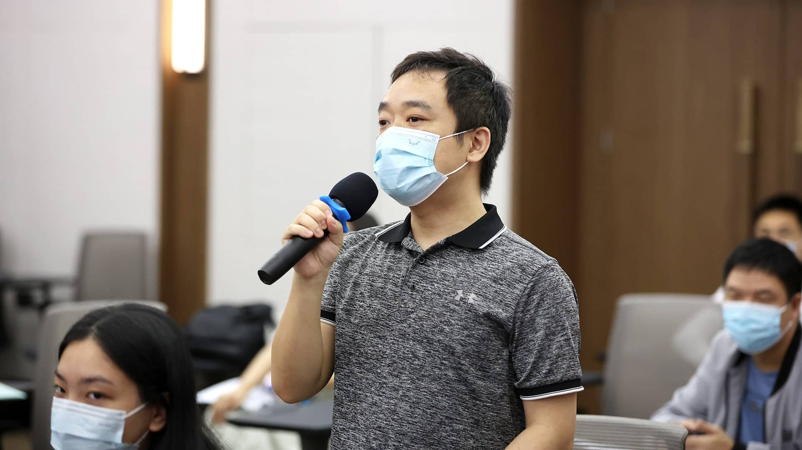

广西壮族自治区党委宣传部于2022年4月12日（星期二）10:00，在广西新闻发布厅举行“喜迎二十大、永远跟党走、奋进新征程”广西共青团有关工作新闻发布会，邀请共青团广西区委书记蒙启鹏，共青团广西区委副书记、新闻发言人左向蕾介绍有关情况并回答记者提问。发布会由自治区政府新闻办副主任薛彬主持。
主题： “喜迎二十大、永远跟党走、奋进新征程”广西共青团有关工作新闻发布会
时间：2022年4月12日（星期二）10:00
地点：南宁市民族大道112号广西新闻发布厅
出席人员：共青团广西区委书记 蒙启鹏 共青团广西区委副书记、新闻发言人 左向蕾
主持人：自治区政府新闻办副主任 薛彬
“迎接宣传贯彻党的二十大 凝心聚力建设新时代中国特色社会主义壮美广西”专题新闻发布会。邀请到共青团广西区委书记蒙启鹏先生，共青团广西区委副书记、新闻发言人左向蕾女士，请他们围绕“喜迎二十大、永远跟党走、奋进新征程”广西共青团有关工作，为大家作介绍，并回答记者朋友们的提问。
4月12日，“喜迎二十大、永远跟党走、奋进新征程”广西共青团有关工作新闻发布会在广西新闻发布厅举行。
2022年是党的二十大召开之年。在党的坚强领导下，共青团团结带领广大团员青年听党话、跟党走，走过了100年的光辉历程。今年，全团紧紧围绕迎接党的二十大胜利召开和学习宣传贯彻大会精神，把庆祝建团100周年作为迎接和学习宣传贯彻党的二十大的有机组成部分，将通过开展“喜迎二十大、永远跟党走、奋进新征程”主题教育实践，引导广大青少年体悟党领导青年运动的光辉历程，坚定理想信念，勇担时代使命。
一、聚精会神抓好迎接党的二十大胜利召开和学习宣传贯彻大会精神工作主线
迎接党的二十大胜利召开和学习宣传贯彻大会精神，是贯穿共青团全年工作的主线。按照自治区党委和团中央的工作部署，全区共青团组织将广泛深入开展“喜迎二十大、永远跟党走、奋进新征程”主题教育实践。
一是加强理论武装。围绕迎接和学习宣传贯彻党的二十大，以团支部、少先队中队为基本单元，不断深化学习贯彻习近平新时代中国特色社会主义思想，用党的创新理论武装全团、教育青少年。
二是组织团（队）日活动。组织全区各级团组织、少先队组织集中开展学习座谈、故事分享、征文演讲、参观寻访、志愿服务等形式多样的团（队）日活动。
三是开展实践建功活动。通过发挥青年突击队、青年志愿者、青年文明号、青年岗位能手、青年安全生产示范岗等“青”字号品牌项目功能，组织引导全区团员立足岗位建功。
四是加强服务引领。继续深化“我为同学做实事”“我为青年做件事”实践活动，做好青少年困难帮扶。
五是做好宣传文化工作。开展“广西青年五四奖章”“两红两优”评选、“广西青年榜样˙向上向善好青年”选树等，激励全区广大青少年以高昂精神状态和接续奋斗姿态喜迎党的二十大胜利召开。
二、简约隆重开展好广西庆祝中国共产主义青年团成立100周年活动
今年是中国共产主义青年团成立100周年，开展庆祝建团100周年相关活动是迎接和学习宣传贯彻党的二十大的有机组成部分。广西通过召开座谈会、表彰和青年榜样选树活动、举办广西青年运动史展览、开展“喜迎二十大、永远跟党走、奋进新征程”主题教育实践，简约隆重开展好广西庆祝中国共产主义青年团成立100周年活动。
三、守正出新围绕“三个共同愿景”打造好广西共青团的三个特色品牌
当前，全区上下正在深入贯彻自治区第十二次党代会精神。建设新时代中国特色社会主义壮美广西迫切需要发挥青年作用、展现青年力量。广西组织动员团员青年围绕“三个共同愿景”接续奋斗，提出要着力打造好广西共青团的三个特色品牌。
第一个特色品牌是锚定“铸牢中华民族共同体意识”，在全区青少年中开展铸牢中华民族共同体意识示范创建活动。日前，团区委联合自治区民宗委、自治区教育厅联合印发了《在全区青少年中开展铸牢中华民族共同体意识示范创建活动的实施方案》，有形、有感、有效地在全区青少年中开展铸牢中华民族共同体意识创建活动。一是强化理论武装，通过开设中小学民族团结小课堂、基层宣讲、特色主题团（队）日活动，铸牢青少年中华民族共同体意识思想基础。二是突出实践导向，通过创建100家铸牢中华民族共同体意识教育实践基地、红领巾民族团结快乐“易”站等，加强阵地建设。三是注重服务效果，面向1100所希望小学开设“铸牢中华民族共同体意识”精品课程、实施“希望启航”行动、民族地区乡村振兴“领头雁”计划等系列活动。四是搭建文化桥梁，举行“石榴花开”系列活动，促进各族青少年交往交流交融。五是深化理论研究，加强铸牢青少年中华民族共同体意识理论支撑。
第二个特色品牌是锚定“积极服务建设中国—东盟命运共同体”，为中国—东盟青少年友好往来提供更多机会和舞台。广西将充分发挥共青团优势，开展一系列人文交流活动，推动与东盟青少年友好交往。一是创新讲好中国故事，组织中国（广西）—东盟青年代表开展2022年中国（广西）—东盟青年手拉手活动；二是办好2022年中国—东盟青年营、第十六届中国—东盟青年艺术品创作大赛等活动；三是开展中国（广西）—东盟青年文明对话系列主题活动，为积极构建中国—东盟命运共同体注入青春活力。
第三个特色品牌是锚定“扎实推动共同富裕”，扎实开展壮美广西青春建新功行动。突出共青团“围绕中心、服务大局”的工作主线，深入实施开放引领、创新驱动、产业振兴、乡村振兴、社会建设青春建功行动，举办青年志愿服务大赛，打造一批青年创业创新孵化基地、“青年创新工作室”，开展青创先锋共建西部陆海新通道比武竞赛，引导广大团员青年营造比学赶超、岗位建功的火热氛围，在扎实推动共同富裕上突出青年最富活力、最具创造性的优势，在推动高质量发展促进共同富裕上发挥青年生力军和突击队作用，为凝心聚力建设新时代中国特色社会主义壮美广西发挥积极作用。